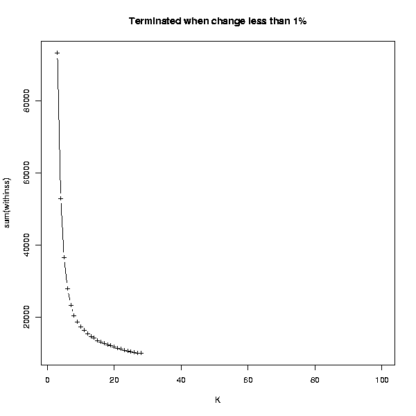

This tool estimates the number of cluster to be used in the K-means clustering
A K-means clustering is performed for every value of K between 1 and 100. When the change in the within sum of squares of the clustering is less than 1% compared to the previous number of K, the analysis is terminated.
The resulting image plots the K against the within sum of squares. A suitable number of K can be estimated from this image. Search for the point, where the curve has a shoulder, and pick the number of K from that region. For example, in the image below, a suitable K could be somewhere between 7 and 13.
This clustering is done using Euclidean distance, and cannot be changed.
A PNG image that can be visualized in the Chipster GUI.
